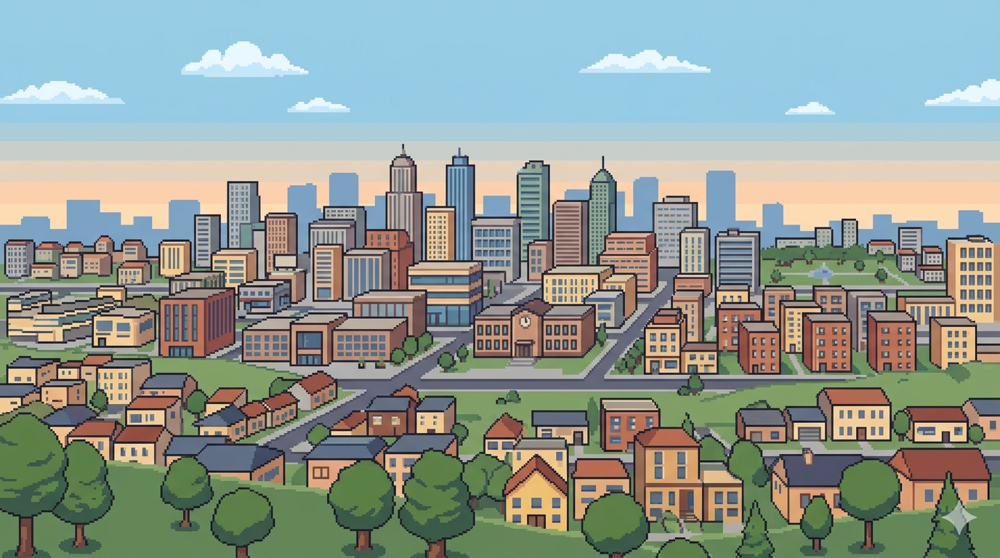

Dignity of Work and Rights of Workers
Factory Expansion Proposal
A manufacturing company proposes building a new factory that would create hundreds of jobs but increase pollution near a working-class neighbourhood.
